Full study report. Sections are also available separately in sections/.
Every question was answered separately for exonic and non-exonic regions, and for SNVs and indels.
People per dataset are the largest allele number in the file divided by two where the file gives allele numbers, otherwise the size stated by the source publication (marked pub.). Technology is as described by each source. All data were downloaded between 19 and 22 November 2026.
| Dataset | Population | People | Technology | Source file |
|---|---|---|---|---|
| gnomAD v4.1 exomes (reference) | Global | 730,947 pub. | Short-read exome | ANNOVAR hg38_gnomad41_exome |
| gnomAD v4.1 genomes (reference) | Global | 76,215 pub. | Short-read genome | ANNOVAR hg38_gnomad41_genome |
| gnomAD v2 exomes | Global | 123,136 pub. | Short-read exome, lifted from hg19 | ANNOVAR hg38_gnomad_exome |
| gnomAD v2 genomes | Global | 15,496 pub. | Short-read genome, lifted | ANNOVAR hg38_gnomad_genome |
| ExAC 0.3 | Global | 60,706 pub. | Short-read exome, lifted | ANNOVAR hg38_exac03 |
| Kaviar 2015-09-23 | 35 aggregated projects | ~77,300 | Mixed, lifted from hg19 | ANNOVAR hg38_kaviar_20150923 |
| 1000 Genomes phase 3 | 26 populations | 2,504 pub. | Low-coverage genome + exome | ANNOVAR hg38_ALL.sites.2015_08 |
| All of Us | USA, diverse | not in file | Short-read genome | ANNOVAR hg38_allofus |
| GME Variome | Middle East and North Africa | ~2,500 pub. | Short-read exome | ANNOVAR hg38_gme |
| TOPMed Freeze 10 | USA, diverse | ~150,900 | Deep short-read genome | UCSC varFreqsAll.bb (top) |
| ToMMo 61KJPN | Japan | ~61,500 | Short-read genome | UCSC varFreqsAll.bb (tom) |
| KOVA v7 | Korea | ~5,300 | Short-read sequencing | UCSC varFreqsAll.bb (kov) |
| MCPS | Mexico City | ~138,200 | Exome sequencing | UCSC varFreqsAll.bb (mcp) |
| FinnGen R12 | Finland | ~530,300 | Genotyping array + imputation | UCSC varFreqsAll.bb (fin) |
| SweGen | Sweden | 1,000 | Short-read genome | UCSC varFreqsAll.bb (swe) |
| Saudi | Saudi Arabia | ~300 | Short-read sequencing | UCSC varFreqsAll.bb (sau) |
| SPARK iWES v3 | USA, autism families | ~142,400 | Exome | UCSC varFreqsAll.bb (spk) |
| SFARI WGS pilot | USA, autism families | 12,519 | Short-read genome | UCSC varFreqsAll.bb (wgs) |
| ALFA (SNVs only) | dbGaP aggregate | not in file | Mixed | UCSC alfa/ALFA.vcf.gz |
| CoLoRSdb | Long-read reference | 1,427 | PacBio HiFi | UCSC colorsDb/colorsDbSnv.vcf.gz |
| GA4K | USA, rare disease | ~550 | PacBio HiFi | UCSC ga4k/ga4kSnv.vcf.gz |
| GoNL | Netherlands | 498 | Short-read genome | UCSC gonl/gonl.vcf.gz |
| GREGoR | USA, rare disease | ~3,300 | Short-read genome/exome | UCSC gregor/gregor.vcf.gz |
| HGDP + 1000 Genomes | Worldwide | ~3,400 | High-coverage genome | UCSC hgdp1kFreq/hgdp1k.freq.vcf.gz |
| HostSeq | Canada | ~9,200 | Short-read genome | UCSC hostseq/hostseq.vcf.gz |
| SG10K Health r5.3.2 | Singapore | ~9,700 | Short-read genome | UCSC npm/SG10K_Health_r5.3.2.sites.vcf.bgz |
| SVatalog | Reference panel | 101 | Linked-read genome | UCSC svatalog/svatalog.vcf.gz |
| UK Biobank | UK | 361,194 | Genotyping array + imputation | UCSC ukbb/ukbb.vcf.gz |
| WBBC | China | 4,480 | Short-read genome | UCSC wbbc/wbbc.vcf.gz |
Download locations:
annotate_variation.pl -buildver hg38 -downdb -webfrom annovar <name> from http://www.openbioinformatics.org/annovar/download/.https://hgdownload.soe.ucsc.edu/gbdb/hg38/varFreqs/ (downloaded over http because the server’s CA bundle rejected the TLS certificate). varFreqsAll.bb: 30,276,835,043 bytes, last modified 2026-01-20, 1,259,969,871 records.| Dataset | Reason |
|---|---|
GenomeAsia 100K (UCSC .bb) |
About 25% of its variants at AF 10–90% are absent from both TOPMed and gnomAD; frequencies judged unreliable |
| ALFA indels | Indel positions in the UCSC file are one base too far right; half remain unmatched after correction |
| IndiGen | No allele frequency in the file |
| SGDP | Allele number 2 per site |
| SCHEMA | Case/control counts per study only |
| UCSC All of Us and ABraOM | All of Us taken from ANNOVAR instead |
| Pan-UK Biobank | GRCh37 only |
GenomeAsia, ALFA indels (position-corrected), IndiGen, SGDP and SCHEMA are present in the union table (presence only).
| Resource | Version | Use |
|---|---|---|
| gnomAD v4 exome calling intervals | ukb.pad50.broad.pad50.union.intervals (UK Biobank ∪ Broad targets, ±50 bp; 393,320 intervals, 170.4 Mb) from gs://gcp-public-data--gnomad/resources/grch38/intervals/ |
Exonic / non-exonic split |
| ClinVar | clinvar_20261115.vcf.gz (GRCh38, MD5 verified) from https://ftp.ncbi.nlm.nih.gov/pub/clinvar/vcf_GRCh38/ |
Step 4 |
| Ensembl VEP | 116.3, merged (Ensembl + RefSeq) cache 116, GRCh38 | Gene and consequence |
| VEP annotation of every possible exonic SNV | Existing run on the CADD v1.7 exon SNV set (exons ±50 bp) | Gene and consequence for 106.8 M SNVs |
| hg38 reference | Homo_sapiens_assembly38.fasta / UCSC hg38.fa |
VEP; left-alignment checks |
VEP 116 RefSeq cache (NASER_FILES/Naser_VEP/vep_cache) |
gnomAD v4.1 exome and genome AFs per group | Additional analyses (gnomAD group AFs for ClinVar P/LP; ACMG annotation) |
| ClinGen gene–disease validity | Release in the BIAS-2015 data (2026-10-15) | Autosomal recessive genes for carrier frequencies |
| GIAB genome stratifications v3.5, GRCh38 | GRCh38_segdups.bed.gz, GRCh38_lowmappabilityall.bed.gz |
Validation of unreliable genes |
| BIAS-2015 | Local installation with its hg38 data (2026-10-15), REVEL, AlphaMissense | ACMG impact |
varFreqsAll.bb was converted to a bgzipped, tabix-indexed table with UCSC bigBedToBed (one job per chromosome). The row count matched the file’s own count. The bigBed’s column order differs from its schema (values are grouped per cohort: AC, AF, then that cohort’s population AC/AF); the header was rebuilt from the data and verified on 20 million rows (fix_bb_header.sh).sources column in one pass.chr prefix removed, MT → M, shared leading then shared trailing bases trimmed, empty allele written -, insertions anchored on the preceding base (Start = End = that base).* alleles dropped; alleles with characters other than A, C, G, T, N dropped (counted in results/01_union/extraction_stats.tsv).<ref length><alt> (0C, 1AC, 21); these were decoded.bcftools norm -f hg38 on chromosome 22 realigned fewer than 50 records per source.PASS or . dropped.All 33 inputs were merged per chromosome (sorted keys, bitmask of datasets) into hg38_freq_union.txt (#Chr Start End Ref Alt is_in how_many), sorted 1–22, X, Y, M, with an ANNOVAR .idx index.
| Region | Definition | gnomAD reference AF | Datasets |
|---|---|---|---|
| Exonic | Start inside the gnomAD v4 exome calling intervals | Exome AF; genome AF where the exome table has no AF | All |
| Non-exonic | Everything else | Genome AF only (exome-table calls ignored) | All except exome-only sets (SPARK WES, GME, ExAC, gnomAD v2 exomes) |
Three gnomAD views:
grpmax excludes MID and FIN.| Variable | Classes |
|---|---|
| Dataset AF | < 1%, 1–5%, 5–10% (low), > 10% (polymorphism), no AF |
| gnomAD | absent, QC fail (row without usable AF), rare (< 5%), low (5–10%), polymorphic (> 10%) |
| Variant type | SNV; indel (one allele -); MNV (other) |
Rare = < 5% in the dataset; polymorphism = > 10%. In gnomAD, rare = < 5% in exome and genome; polymorphic = > 10% in exome or genome (one reference AF per region, section 3.5).
| Step | Analysis | Definition |
|---|---|---|
| 1 | Unique to the dataset | Share of the dataset’s variants absent from gnomAD, all and AF ≥ 1% |
| 2 | Polymorphisms and rare variants | Cross-tabulation of dataset class × gnomAD class, for each gnomAD view, in both directions |
| 3 | Markers | SNVs > 10% in a country dataset with gnomAD popmax < 5% or absent |
| 3 | Structure | PCA (SVD of the centred population × SNV AF matrix) and mean absolute AF difference; SNVs with gnomAD genome AF, AF ≥ 1% in some country set, thinned to one per 100 kb; country datasets with AF for at least 20% of these SNVs, plus the eight gnomAD genome groups |
| 4 | ClinVar | ClinVar alleles (normalised as in 3.2) with AF ≥ 5% in at least one dataset; grouped as P/LP, VUS, conflicting, B/LB, other; review stars from CLNREVSTAT; support = number of independent datasets with AF ≥ 5% (gnomAD v2 and ExAC counted with gnomAD) |
| 5 | Gene level | See below |
| 6–10 | Additional analyses | Founder variants, carrier frequencies, unreliable genes and regions, ancestry markers, ACMG impact: methods in Additional analyses |
--pick_allele, order MANE Select, MANE Plus Clinical, canonical, APPRIS, TSL, biotype, CCDS, rank, length).| Check | Result |
|---|---|
| Union and study row counts against source counts | Match (e.g. bigBed 1,259,969,871 rows) |
| Indel placement per source: REF against hg38 at POS and POS−1; overlap with gnomAD when shifted ±1 | Only ALFA misplaced |
Normalisation with bcftools norm -f hg38 (chr22) |
< 50 realignments per source |
Chromosome slices read from ANNOVAR .idx against full-file counts |
Match after taking the minimum/maximum byte offsets |
| Cross-dataset consistency of rare-allele frequencies | Revealed tiny-AN records (SPARK, ToMMo) |
| ClinVar flags against independent datasets | 127 of 140 P/LP flags rest on one dataset |
| Gene step: every variant annotated once | 106,845,209 + 89,022,055 = 195,874,106 |
| Software | Version |
|---|---|
| GNU awk | 5.1.1 |
| GNU coreutils (sort) | 9.0 |
| bcftools / tabix (htslib) | 1.19 |
| UCSC bigBedToBed, bigBedInfo (bioconda) | 482 |
| aria2 | 1.37.0 |
| Ensembl VEP (Docker) | 116.3 (Ensembl API 116) |
| Python | 3.10.22 |
| pandas / NumPy / SciPy / matplotlib | 2.2.2 / 1.26.4 / 1.14.1 / 3.10.9 |
Server: 192-core ARM (Kunpeng), 1.5 TB RAM. Extraction runs as 511 jobs (120 in parallel). A full study run takes about 1.7 hours; the gene step about 3 hours, of which VEP takes 2 hours on 120 cores.
All numbers below are generated from the tables in results/ by scripts/make_results_md.py. Definitions of every class and view are in Materials and methods.
The union table holds 2,055,347,367 distinct variants (hg38). 51.9% are in one dataset only, 38.5% in 2–5 datasets and 9.6% in 6 or more. The highest number of datasets sharing one variant is 32.
| Dataset | Variants in union | Only in this dataset |
|---|---|---|
| allofus | 1,116,475,817 | 404,818,904 |
| topmed | 868,581,653 | 148,058,026 |
| gnomad41_genome | 759,336,310 | 95,320,044 |
| gnomad_genome | 260,417,615 | 4,546,206 |
| tommo | 257,948,687 | 124,804,524 |
| hostseq | 213,382,086 | 22,454,486 |
| kaviar_20150923 | 209,955,474 | 34,648,226 |
| hgdp1kg | 188,568,310 | 2,758,263 |
| gnomad41_exome | 183,717,260 | 109,794,024 |
| sg10k_npm | 179,418,880 | 40,134,644 |
| sfari_wgs | 167,036,436 | 13,758,308 |
| alfa | 163,487,204 | 4,021,683 |
| mcps | 140,367,157 | 17,587,794 |
| gregor | 115,608,418 | 9,139,429 |
| 1000g2015aug | 84,917,695 | 92,767 |
| wbbc | 78,594,274 | 16,891,298 |
| colorsdb | 50,103,023 | 2,134,169 |
| sgdp | 45,314,671 | 1,925,062 |
| kova | 43,302,651 | 6,348,421 |
| ga4k | 36,246,689 | 547,724 |
| swegen | 35,081,565 | 1,953,889 |
| gonl | 34,803,723 | 1,296,366 |
| saudi | 25,488,981 | 1,403,252 |
| finngen | 20,005,939 | 1,199 |
| gnomad_exome | 16,997,118 | 367,560 |
| ukbb | 13,723,704 | 3,854 |
| spark_wes | 12,887,332 | 1,313,671 |
| exac03 | 10,187,785 | 9,018 |
| schema | 8,863,409 | 201,558 |
| svatalog | 8,518,326 | 59,563 |
| genomeasia | 3,383,515 | 78,535 |
| gme | 687,665 | 77,935 |
Share of each dataset’s variants that are absent from gnomAD v4.1, for all variants and for variants with AF ≥ 1% in the dataset. Exonic: gnomAD exomes + genomes. Non-exonic: gnomAD genomes only.
| Dataset | Variants | % not in gnomAD | Variants AF ≥ 1% | AF ≥ 1% not in gnomAD | % AF ≥ 1% not in gnomAD |
|---|---|---|---|---|---|
| gme | 677,157 | 15.26% | 98,647 | 7,363 | 7.46% |
| gnomad_exome_v2 | 15,818,509 | 5.64% | 157,639 | 3,375 | 2.14% |
| gnomad_genome_v2 | 13,279,787 | 2.98% | 694,471 | 14,705 | 2.12% |
| exac03 | 9,497,904 | 4.90% | 167,903 | 3,499 | 2.08% |
| colorsdb | 1,936,829 | 1.99% | 593,588 | 11,748 | 1.98% |
| alfa | 10,058,751 | 6.66% | 660,045 | 12,384 | 1.88% |
| ga4k | 1,388,133 | 2.19% | 590,308 | 9,666 | 1.64% |
| svatalog | 380,907 | 1.42% | 380,907 | 5,424 | 1.42% |
| kaviar | 17,269,090 | 10.05% | 489,818 | 5,587 | 1.14% |
| 1000g2015aug | 4,970,014 | 1.32% | 632,378 | 6,863 | 1.09% |
| gonl | 1,347,556 | 6.07% | 504,811 | 3,193 | 0.63% |
| gregor | 4,789,146 | 7.76% | 528,283 | 3,203 | 0.61% |
| topmed | 45,585,138 | 21.09% | 776,783 | 2,917 | 0.38% |
| tommo | 11,924,498 | 38.08% | 384,477 | 1,193 | 0.31% |
| allofus | 58,612,458 | 32.28% | 623,931 | 1,944 | 0.31% |
| saudi | 1,434,235 | 6.94% | 486,971 | 1,264 | 0.26% |
| ukbb | 782,434 | 0.18% | 420,635 | 559 | 0.13% |
| sg10k_npm | 8,943,444 | 23.10% | 459,843 | 534 | 0.12% |
| sfari_wgs | 8,391,650 | 10.53% | 511,162 | 440 | 0.09% |
| hostseq | 9,219,938 | 12.63% | 501,215 | 218 | 0.04% |
| spark_wes | 11,948,040 | 16.28% | 149,569 | 43 | 0.03% |
| swegen | 1,670,659 | 5.36% | 510,566 | 96 | 0.02% |
| kova | 2,916,020 | 19.09% | 358,150 | 78 | 0.02% |
| mcps | 11,972,559 | 23.01% | 406,055 | 92 | 0.02% |
| hgdp1kg | 7,365,030 | 1.37% | 634,696 | 1 | 0.00% |
| wbbc | 4,438,310 | 25.13% | 356,222 | 0 | 0.00% |
| finngen | 992,843 | 0.07% | 434,510 | 0 | 0.00% |
| Dataset | Variants | % not in gnomAD | Variants AF ≥ 1% | AF ≥ 1% not in gnomAD | % AF ≥ 1% not in gnomAD |
|---|---|---|---|---|---|
| gme | 10,508 | 25.10% | 2,467 | 652 | 26.43% |
| kaviar | 1,874,701 | 31.82% | 97,966 | 5,770 | 5.89% |
| allofus | 6,382,028 | 44.30% | 176,607 | 7,288 | 4.13% |
| colorsdb | 413,269 | 5.90% | 151,202 | 5,177 | 3.42% |
| ga4k | 329,799 | 5.81% | 164,755 | 5,494 | 3.33% |
| svatalog | 44,279 | 3.27% | 44,279 | 1,448 | 3.27% |
| 1000g2015aug | 176,805 | 2.97% | 72,478 | 2,088 | 2.88% |
| exac03 | 686,320 | 11.20% | 31,863 | 750 | 2.35% |
| ukbb | 58,581 | 2.10% | 45,840 | 1,058 | 2.31% |
| gnomad_exome_v2 | 1,171,218 | 10.63% | 28,516 | 541 | 1.90% |
| gnomad_genome_v2 | 1,615,159 | 4.78% | 155,068 | 2,664 | 1.72% |
| topmed | 4,313,850 | 27.38% | 164,285 | 1,411 | 0.86% |
| sfari_wgs | 825,642 | 14.53% | 61,031 | 444 | 0.73% |
| spark_wes | 730,650 | 25.80% | 11,304 | 79 | 0.70% |
| sg10k_npm | 733,783 | 33.54% | 42,326 | 205 | 0.48% |
| mcps | 864,826 | 32.12% | 43,467 | 179 | 0.41% |
| tommo | 900,485 | 58.67% | 25,349 | 61 | 0.24% |
| gregor | 793,497 | 8.89% | 169,703 | 411 | 0.24% |
| gonl | 287,151 | 2.76% | 126,354 | 117 | 0.09% |
| swegen | 168,975 | 6.87% | 51,125 | 28 | 0.05% |
| kova | 212,214 | 30.40% | 25,969 | 13 | 0.05% |
| hostseq | 1,185,353 | 13.59% | 134,130 | 35 | 0.03% |
| wbbc | 327,560 | 30.88% | 23,791 | 0 | 0.00% |
| hgdp1kg | 971,211 | 1.37% | 155,612 | 4 | 0.00% |
| finngen | 94,149 | 0.02% | 46,280 | 0 | 0.00% |
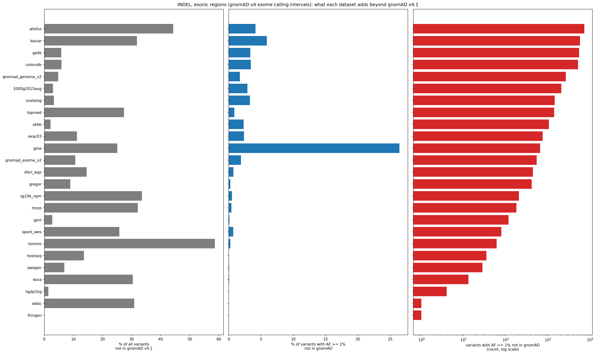
| Dataset | Variants | % not in gnomAD | Variants AF ≥ 1% | AF ≥ 1% not in gnomAD | % AF ≥ 1% not in gnomAD |
|---|---|---|---|---|---|
| colorsdb | 36,899,589 | 10.06% | 12,361,062 | 1,359,440 | 11.00% |
| topmed | 742,117,766 | 40.48% | 16,021,874 | 1,226,186 | 7.65% |
| tommo | 196,076,062 | 64.84% | 7,564,035 | 542,809 | 7.18% |
| swegen | 29,996,166 | 17.46% | 10,086,068 | 626,454 | 6.21% |
| alfa | 136,086,372 | 14.48% | 12,964,190 | 777,811 | 6.00% |
| ga4k | 26,058,276 | 6.76% | 11,617,533 | 645,590 | 5.56% |
| sg10k_npm | 149,387,922 | 45.29% | 9,487,423 | 486,046 | 5.12% |
| gonl | 24,726,537 | 14.21% | 10,102,223 | 517,618 | 5.12% |
| sfari_wgs | 141,794,374 | 24.57% | 10,199,534 | 486,383 | 4.77% |
| svatalog | 7,130,203 | 1.61% | 7,130,203 | 115,072 | 1.61% |
| kova | 37,498,359 | 35.95% | 6,595,513 | 99,389 | 1.51% |
| gnomad_genome_v2 | 213,863,282 | 5.09% | 13,127,098 | 193,831 | 1.48% |
| kaviar | 156,482,085 | 22.33% | 9,875,584 | 107,304 | 1.09% |
| 1000g2015aug | 76,455,109 | 2.04% | 12,132,466 | 99,113 | 0.82% |
| allofus | 935,654,106 | 58.23% | 12,310,970 | 92,806 | 0.75% |
| saudi | 24,054,746 | 11.34% | 8,976,432 | 30,749 | 0.34% |
| gregor | 80,225,986 | 15.34% | 10,226,966 | 25,434 | 0.25% |
| ukbb | 11,687,951 | 0.26% | 8,184,777 | 16,408 | 0.20% |
| wbbc | 68,189,102 | 43.42% | 6,668,188 | 8,569 | 0.13% |
| mcps | 116,028,585 | 35.01% | 7,962,226 | 9,465 | 0.12% |
| finngen | 17,094,529 | 0.43% | 8,329,131 | 5,692 | 0.07% |
| hostseq | 146,280,728 | 25.49% | 9,775,222 | 1,394 | 0.01% |
| hgdp1kg | 122,222,115 | 2.53% | 12,372,584 | 106 | 0.00% |
| Dataset | Variants | % not in gnomAD | Variants AF ≥ 1% | AF ≥ 1% not in gnomAD | % AF ≥ 1% not in gnomAD |
|---|---|---|---|---|---|
| kaviar | 29,276,373 | 48.00% | 2,233,523 | 187,526 | 8.40% |
| allofus | 115,827,225 | 56.12% | 4,958,303 | 364,272 | 7.35% |
| colorsdb | 10,853,016 | 9.72% | 4,143,799 | 233,708 | 5.64% |
| ga4k | 8,470,481 | 7.36% | 4,388,251 | 210,991 | 4.81% |
| svatalog | 962,937 | 3.71% | 962,937 | 35,723 | 3.71% |
| tommo | 15,842,994 | 72.11% | 515,461 | 14,221 | 2.76% |
| sg10k_npm | 11,550,951 | 46.15% | 805,749 | 20,453 | 2.54% |
| 1000g2015aug | 3,314,343 | 3.37% | 1,539,756 | 37,266 | 2.42% |
| ukbb | 1,194,738 | 2.27% | 1,018,043 | 24,022 | 2.36% |
| topmed | 76,564,899 | 35.14% | 4,410,155 | 102,991 | 2.34% |
| sfari_wgs | 15,892,695 | 20.13% | 1,456,874 | 33,365 | 2.29% |
| swegen | 3,191,048 | 11.52% | 1,058,851 | 19,578 | 1.85% |
| gnomad_genome_v2 | 31,659,387 | 5.64% | 3,978,968 | 40,786 | 1.03% |
| mcps | 10,075,091 | 31.70% | 929,497 | 6,996 | 0.75% |
| gonl | 7,227,701 | 4.08% | 3,296,853 | 19,176 | 0.58% |
| kova | 2,676,058 | 38.81% | 461,856 | 2,544 | 0.55% |
| gregor | 19,267,808 | 10.29% | 4,936,718 | 21,172 | 0.43% |
| wbbc | 5,639,302 | 36.37% | 443,324 | 698 | 0.16% |
| hostseq | 24,463,140 | 15.76% | 3,685,637 | 1,816 | 0.05% |
| finngen | 1,788,917 | 0.11% | 952,086 | 209 | 0.02% |
| hgdp1kg | 20,972,276 | 1.49% | 4,183,712 | 90 | 0.00% |
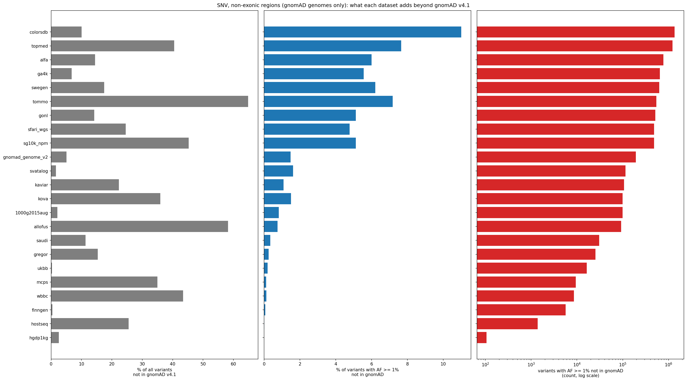
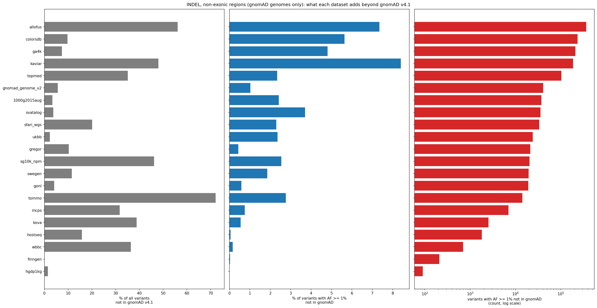
Of each dataset’s polymorphisms (AF > 10%), the share that gnomAD calls rare (< 5%), and the share absent or QC-failed, under the three gnomAD views: overall AF, the population maximum (popmax) and the dataset’s matching gnomAD group.
| Dataset | Type | Polymorphisms | Rare in gnomAD (overall) | Rare (popmax) | Rare (matched group) | Absent / QC fail (popmax) |
|---|---|---|---|---|---|---|
| FinnGen (Finland) | SNV | 236,547 | 0.80% | 0.06% | 4.05% | 0.00% |
| GME (Middle East) | SNV | 36,497 | 10.14% | 8.16% | 9.38% | 3.29% |
| GoNL (Netherlands) | SNV | 266,382 | 2.54% | 1.66% | 3.89% | 0.06% |
| KOVA (Korea) | SNV | 203,390 | 9.18% | 0.20% | 3.32% | 0.00% |
| MCPS (Mexico) | SNV | 241,011 | 6.74% | 0.35% | 2.97% | 0.01% |
| SG10K (Singapore) | SNV | 261,835 | 7.63% | 0.35% | 4.52% | 0.00% |
| Saudi Arabia | SNV | 235,199 | 3.23% | 0.19% | 4.01% | 0.00% |
| SweGen (Sweden) | SNV | 278,846 | 3.03% | 1.65% | 4.37% | 0.00% |
| ToMMo (Japan) | SNV | 218,927 | 11.65% | 1.91% | 5.72% | 0.30% |
| UK Biobank | SNV | 240,045 | 1.25% | 0.62% | 2.62% | 0.13% |
| WBBC (China) | SNV | 215,414 | 8.22% | 0.13% | 3.12% | 0.00% |
| allofus | SNV | 277,765 | 4.54% | 2.36% | 0.28% | |
| topmed | SNV | 329,952 | 9.85% | 5.84% | 0.60% | |
| FinnGen (Finland) | INDEL | 24,224 | 1.95% | 0.24% | 5.07% | 0.00% |
| GME (Middle East) | INDEL | 810 | 35.43% | 35.68% | 38.15% | 21.61% |
| GoNL (Netherlands) | INDEL | 44,011 | 3.88% | 1.55% | 5.94% | 0.01% |
| KOVA (Korea) | INDEL | 14,423 | 10.19% | 0.28% | 3.96% | 0.00% |
| MCPS (Mexico) | INDEL | 25,694 | 7.83% | 1.60% | 4.85% | 0.31% |
| SG10K (Singapore) | INDEL | 22,328 | 9.71% | 1.09% | 6.40% | 0.00% |
| SweGen (Sweden) | INDEL | 26,935 | 3.75% | 1.56% | 5.84% | 0.01% |
| ToMMo (Japan) | INDEL | 13,877 | 12.70% | 1.68% | 5.72% | 0.30% |
| UK Biobank | INDEL | 30,090 | 4.10% | 2.55% | 6.65% | 2.55% |
| WBBC (China) | INDEL | 9,311 | 11.78% | 0.21% | 3.79% | 0.00% |
| allofus | INDEL | 70,486 | 15.04% | 9.48% | 2.31% | |
| topmed | INDEL | 63,310 | 9.58% | 3.74% | 0.64% |
| Dataset | Type | Polymorphisms | Rare in gnomAD (overall) | Rare (popmax) | Rare (matched group) | Absent / QC fail (popmax) |
|---|---|---|---|---|---|---|
| FinnGen (Finland) | SNV | 4,760,832 | 0.28% | 0.00% | 0.00% | 0.04% |
| GoNL (Netherlands) | SNV | 5,466,674 | 1.38% | 1.15% | 1.49% | 2.09% |
| KOVA (Korea) | SNV | 3,910,694 | 6.33% | 0.02% | 0.03% | 0.21% |
| MCPS (Mexico) | SNV | 4,884,843 | 4.62% | 0.43% | 0.73% | 0.08% |
| SG10K (Singapore) | SNV | 5,383,800 | 4.88% | 0.08% | 0.57% | 1.36% |
| Saudi Arabia | SNV | 4,609,585 | 1.30% | 0.07% | 0.36% | 0.05% |
| SweGen (Sweden) | SNV | 5,571,186 | 0.96% | 0.60% | 1.03% | 3.41% |
| ToMMo (Japan) | SNV | 4,403,575 | 7.25% | 0.97% | 1.32% | 4.30% |
| UK Biobank | SNV | 4,866,454 | 0.57% | 0.48% | 0.65% | 0.19% |
| WBBC (China) | SNV | 4,198,467 | 5.93% | 0.00% | 0.00% | 0.06% |
| allofus | SNV | 5,690,166 | 1.98% | 1.65% | 0.66% | |
| topmed | SNV | 6,871,557 | 5.70% | 5.20% | 5.85% | |
| FinnGen (Finland) | INDEL | 513,986 | 0.29% | 0.00% | 0.01% | 0.02% |
| GoNL (Netherlands) | INDEL | 1,109,054 | 2.78% | 2.00% | 3.04% | 0.39% |
| KOVA (Korea) | INDEL | 272,038 | 6.38% | 0.02% | 0.03% | 0.10% |
| MCPS (Mexico) | INDEL | 555,743 | 5.86% | 1.72% | 2.32% | 0.59% |
| SG10K (Singapore) | INDEL | 431,034 | 5.62% | 0.33% | 1.11% | 0.62% |
| SweGen (Sweden) | INDEL | 572,462 | 1.04% | 0.63% | 1.04% | 1.21% |
| ToMMo (Japan) | INDEL | 290,094 | 7.82% | 0.93% | 1.33% | 1.95% |
| UK Biobank | INDEL | 702,507 | 2.77% | 2.18% | 3.26% | 2.33% |
| WBBC (China) | INDEL | 167,469 | 8.84% | 0.04% | 0.06% | 0.06% |
| allofus | INDEL | 1,946,962 | 9.13% | 8.32% | 5.45% | |
| topmed | INDEL | 1,652,173 | 3.86% | 2.93% | 1.89% |
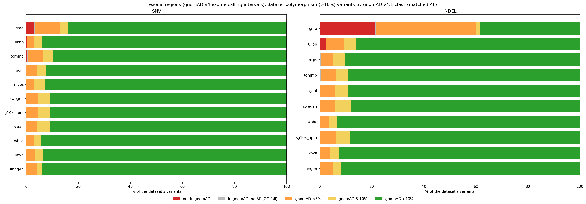

Of each dataset’s rare variants (AF < 5%), the share that gnomAD calls polymorphic (> 10%).
| Dataset | Type | Rare variants | Polymorphic in gnomAD (overall) | Polymorphic (matched group) | Polymorphic (popmax) |
|---|---|---|---|---|---|
| FinnGen (Finland) | SNV | 699,924 | 0.61% | 0.35% | 8.54% |
| GME (Middle East) | SNV | 628,724 | 0.07% | 0.05% | 1.70% |
| GoNL (Netherlands) | SNV | 1,013,056 | 1.02% | 0.78% | 7.74% |
| KOVA (Korea) | SNV | 2,669,448 | 1.09% | 0.12% | 2.49% |
| MCPS (Mexico) | SNV | 11,682,203 | 0.12% | 0.02% | 0.99% |
| SG10K (Singapore) | SNV | 8,624,430 | 0.31% | 0.05% | 1.28% |
| Saudi Arabia | SNV | 1,140,784 | 0.56% | 0.19% | 7.07% |
| SweGen (Sweden) | SNV | 1,325,162 | 0.52% | 0.40% | 5.60% |
| ToMMo (Japan) | SNV | 11,654,969 | 0.27% | 0.02% | 0.85% |
| UK Biobank | SNV | 486,965 | 0.75% | 0.43% | 12.19% |
| WBBC (China) | SNV | 4,180,345 | 0.72% | 0.04% | 1.85% |
| allofus | SNV | 58,259,259 | 0.01% | 0.14% | |
| topmed | SNV | 45,155,519 | 0.02% | 0.17% | |
| FinnGen (Finland) | INDEL | 63,475 | 2.47% | 1.31% | 13.29% |
| GME (Middle East) | INDEL | 9,304 | 0.15% | 0.11% | 1.26% |
| GoNL (Netherlands) | INDEL | 223,527 | 8.27% | 7.97% | 19.18% |
| KOVA (Korea) | INDEL | 194,511 | 1.12% | 0.12% | 2.60% |
| MCPS (Mexico) | INDEL | 833,808 | 0.31% | 0.13% | 1.62% |
| SG10K (Singapore) | INDEL | 705,511 | 0.32% | 0.06% | 1.36% |
| SweGen (Sweden) | INDEL | 135,249 | 1.65% | 1.44% | 7.29% |
| ToMMo (Japan) | INDEL | 882,999 | 0.27% | 0.04% | 0.84% |
| UK Biobank | INDEL | 22,817 | 1.98% | 0.95% | 21.31% |
| WBBC (China) | INDEL | 314,757 | 1.72% | 0.62% | 4.11% |
| allofus | INDEL | 6,286,179 | 0.21% | 0.56% | |
| topmed | INDEL | 4,225,529 | 0.36% | 0.91% |
| Dataset | Type | Rare variants | Polymorphic in gnomAD (overall) | Polymorphic (matched group) | Polymorphic (popmax) |
|---|---|---|---|---|---|
| FinnGen (Finland) | SNV | 11,270,584 | 1.36% | 0.03% | 9.19% |
| GoNL (Netherlands) | SNV | 17,829,661 | 1.55% | 0.61% | 7.61% |
| KOVA (Korea) | SNV | 32,789,173 | 1.63% | 0.05% | 3.18% |
| MCPS (Mexico) | SNV | 110,202,031 | 0.29% | 0.04% | 1.83% |
| SG10K (Singapore) | SNV | 142,668,755 | 0.37% | 0.02% | 1.32% |
| Saudi Arabia | SNV | 18,374,223 | 0.43% | 0.10% | 7.21% |
| SweGen (Sweden) | SNV | 23,087,723 | 0.82% | 0.19% | 5.41% |
| ToMMo (Japan) | SNV | 190,072,136 | 0.32% | 0.01% | 0.88% |
| UK Biobank | SNV | 5,764,033 | 2.49% | 0.06% | 16.06% |
| WBBC (China) | SNV | 63,213,030 | 0.94% | 0.01% | 2.10% |
| allofus | SNV | 928,497,626 | 0.00% | 0.13% | |
| topmed | SNV | 733,171,965 | 0.01% | 0.15% | |
| FinnGen (Finland) | INDEL | 1,141,854 | 1.70% | 0.07% | 12.86% |
| GoNL (Netherlands) | INDEL | 5,599,120 | 5.61% | 4.71% | 14.70% |
| KOVA (Korea) | INDEL | 2,346,094 | 1.68% | 0.06% | 3.33% |
| MCPS (Mexico) | INDEL | 9,408,659 | 0.47% | 0.11% | 2.62% |
| SG10K (Singapore) | INDEL | 11,004,729 | 0.39% | 0.02% | 1.42% |
| SweGen (Sweden) | INDEL | 2,474,476 | 0.95% | 0.25% | 6.49% |
| ToMMo (Japan) | INDEL | 15,457,587 | 0.33% | 0.03% | 0.91% |
| UK Biobank | INDEL | 372,907 | 4.55% | 0.31% | 26.25% |
| WBBC (China) | INDEL | 5,404,978 | 1.38% | 0.05% | 3.45% |
| allofus | INDEL | 113,146,837 | 0.00% | 0.31% | |
| topmed | INDEL | 74,215,970 | 0.12% | 0.67% |
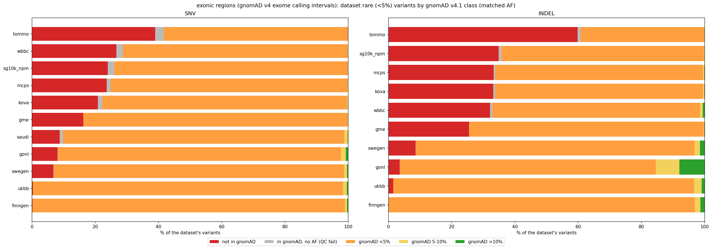
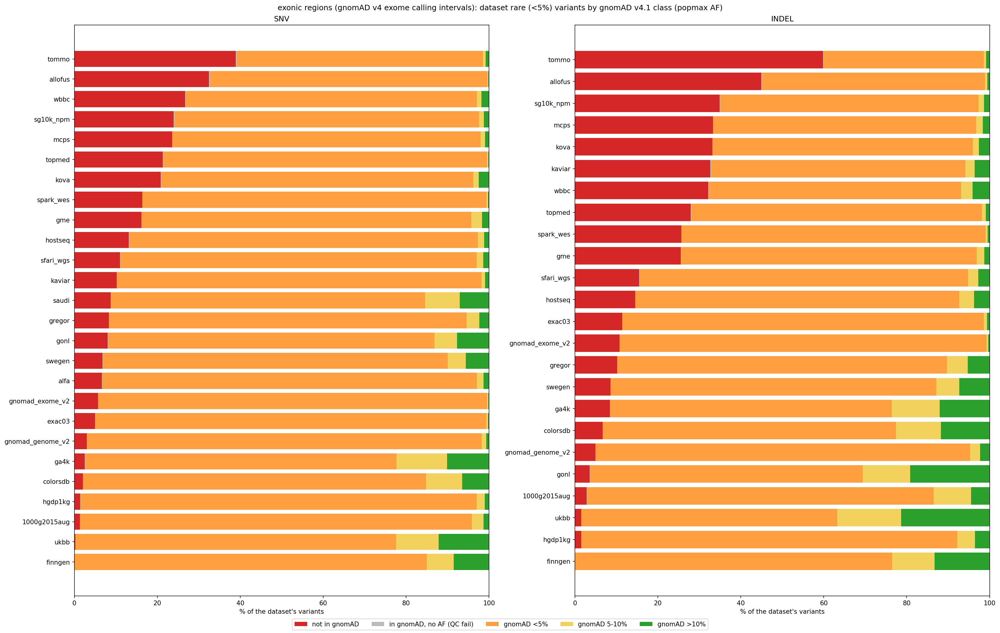
Exonic SNVs with AF > 10% in the dataset and gnomAD popmax < 5% or absent, per country dataset:
| Dataset | Marker SNVs | Absent / QC fail in gnomAD | Rare (< 5%) in every gnomAD group |
|---|---|---|---|
| ToMMo (Japan) | 4,820 | 648 | 4,172 |
| SweGen (Sweden) | 4,624 | 18 | 4,606 |
| GoNL (Netherlands) | 4,591 | 168 | 4,423 |
| GME (Middle East) | 4,179 | 1,202 | 2,977 |
| UK Biobank | 1,807 | 312 | 1,495 |
| SG10K (Singapore) | 919 | 11 | 908 |
| MCPS (Mexico) | 896 | 42 | 854 |
| Saudi Arabia | 449 | 1 | 448 |
| KOVA (Korea) | 401 | 0 | 401 |
| WBBC (China) | 271 | 0 | 271 |
| FinnGen (Finland) | 131 | 0 | 131 |
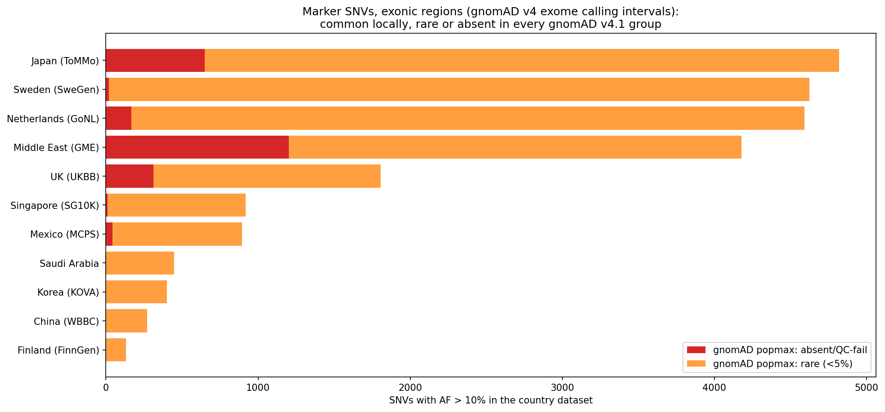
Population PCA on allele frequencies (exonic SNVs with gnomAD genome AF, AF ≥ 1% somewhere, one per 100 kb) and the mean absolute AF difference between populations:
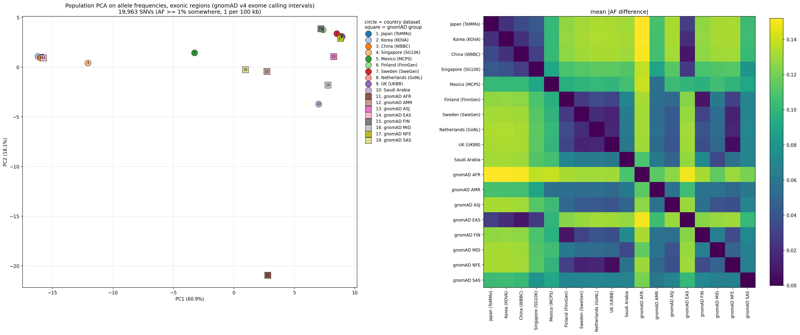
ClinVar (2026-11-15) variants with AF ≥ 5% in at least one dataset and gnomAD popmax < 5% or absent, by the number of independent datasets supporting the high frequency (gnomAD v2 and ExAC counted with gnomAD).
| ClinVar group | 0 dataset(s) | 1 dataset(s) | 2 dataset(s) | 3 dataset(s) | 4+ dataset(s) | Total |
|---|---|---|---|---|---|---|
| Conflicting | 14 | 682 | 44 | 18 | 6 | 764 |
| P/LP | 1 | 127 | 9 | 1 | 2 | 140 |
| VUS | 41 | 1,261 | 129 | 37 | 36 | 1,504 |
| ClinVar group | 1 dataset(s) | 2 dataset(s) | 3 dataset(s) | 4+ dataset(s) | Total |
|---|---|---|---|---|---|
| Conflicting | 5 | 0 | 0 | 0 | 5 |
| P/LP | 1 | 0 | 0 | 0 | 1 |
| VUS | 19 | 11 | 5 | 4 | 39 |
Exonic pathogenic / likely pathogenic variants supported by two or more datasets:
| Chr | Start | Ref | Alt | Gene | ClinVar | Stars | Max AF | gnomAD popmax | Datasets (AF) |
|---|---|---|---|---|---|---|---|---|---|
| 19 | 1037767 | G | A | CNN2 | Pathogenic | 1 | 0.492488 | 0.0004 | gnomad_genome_v2:0.2552;tommo:0.134746;swegen:0.275;topmed:0.492488;alfa:0.2039 |
| 19 | 1037757 | G | A | CNN2 | Pathogenic | 1 | 0.491832 | 0.0008 | gnomad_genome_v2:0.2514;tommo:0.135418;swegen:0.2575;topmed:0.491832;alfa:0.3563 |
| 10 | 48066 | C | A | TUBB8 | Likely_pathogenic | 1 | 0.3585 | 0.0013 | gnomad_genome_v2:0.0591;swegen:0.3585;topmed:0.051899;alfa:0.0991 |
| 7 | 142750600 | A | T | PRSS1 | Pathogenic | 2 | 0.4751 | 2.382e-05 | gnomad_exome_v2:0.2927;gnomad_genome_v2:0.2676;exac03:0.4751;gme:0.450058;alfa:0.1841 |
| 5 | 126577145 | T | C | ALDH7A1 | Pathogenic | 2 | 0.282934 | 2.987e-05 | mcps:0.282934;alfa:0.1414 |
| 7 | 142750600 | A | C | PRSS1 | Pathogenic | 2 | 0.255 | 7.241e-05 | swegen:0.0725;gonl:0.255 |
| 14 | 77027444 | G | A | IRF2BPL | Likely_pathogenic | 2 | 0.1644 | 0 | topmed:0.0824194;alfa:0.1644 |
| 8 | 100705591 | A | G | PABPC1 | Pathogenic | 1 | 0.135585 | 0.0067 | gme:0.135585;gonl:0.053 |
| 14 | 77027450 | G | A | IRF2BPL | Likely_pathogenic | 1 | 0.132 | 4.944e-05 | topmed:0.0657195;alfa:0.132 |
| 7 | 152248171 | G | A | KMT2C | Pathogenic | 1 | 0.125926 | . | gme:0.125926;alfa:0.0898 |
| 3 | 186079931 | T | G | ETV5 | Pathogenic | 1 | 0.121628 | 0.0341 | topmed:0.121628;alfa:0.0602 |
| 13 | 20189473 | C | T | GJB2 | Pathogenic | 3 | 0.0977679 | 0.0415 | sg10k_npm:0.075807;wbbc:0.0977679 |
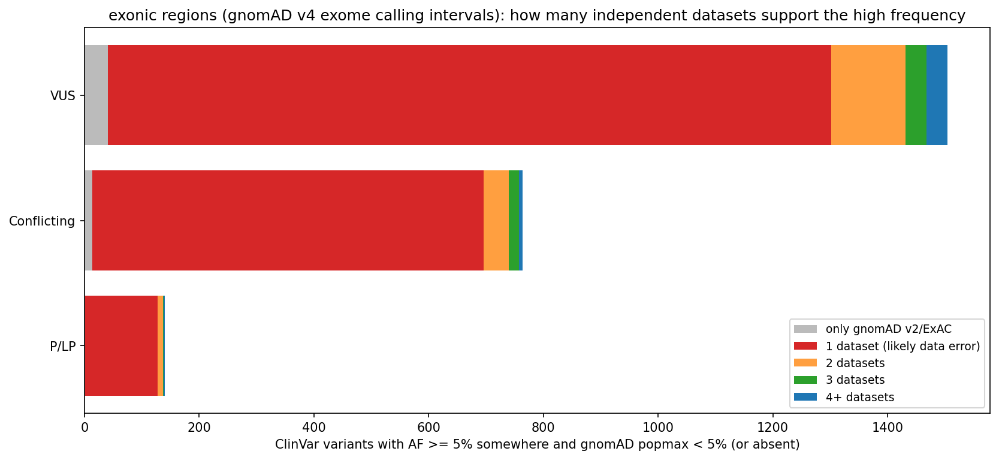
Genes significantly above (high) or below (low) the gnomAD expectation (FDR < 5%, ≥ 2-fold, ≥ 5 variants); PA = protein-altering, syn = synonymous (technical control), common = AF ≥ 1%.
| Dataset | PA common high | PA common low | syn common high | PA all high | PA all low |
|---|---|---|---|---|---|
| gme | 385 | 178 | 107 | 391 | 930 |
| colorsdb | 121 | 15 | 74 | 1081 | 1038 |
| ga4k | 101 | 15 | 55 | 863 | 361 |
| alfa | 87 | 13 | 35 | 50 | 1229 |
| topmed | 84 | 3 | 48 | 14 | 380 |
| allofus | 75 | 115 | 18 | 4 | 831 |
| kaviar | 52 | 47 | 7 | 161 | 1412 |
| gnomad_genome_v2 | 51 | 23 | 19 | 108 | 904 |
| swegen | 44 | 12 | 17 | 430 | 179 |
| 1000g2015aug | 39 | 85 | 9 | 435 | 1644 |
| exac03 | 39 | 61 | 8 | 40 | 1760 |
| saudi | 35 | 163 | 6 | 548 | 406 |
| tommo | 34 | 19 | 21 | 53 | 253 |
| gnomad_exome_v2 | 33 | 46 | 10 | 39 | 954 |
| hgdp1kg | 27 | 52 | 8 | 267 | 1413 |
| svatalog | 23 | 7 | 6 | 358 | 5 |
| gonl | 20 | 25 | 2 | 419 | 266 |
| gregor | 18 | 18 | 2 | 388 | 1096 |
| sg10k_npm | 11 | 24 | 4 | 107 | 1027 |
| wbbc | 10 | 64 | 1 | 236 | 1849 |
| kova | 7 | 31 | 3 | 227 | 817 |
| hostseq | 7 | 43 | 1 | 92 | 1466 |
| sfari_wgs | 6 | 10 | 2 | 125 | 901 |
| spark_wes | 5 | 36 | 0 | 0 | 929 |
| finngen | 3 | 100 | 0 | 256 | 71 |
| mcps | 2 | 88 | 0 | 10 | 1101 |
| ukbb | 1 | 96 | 0 | 751 | 470 |
Uniqueness of genes high for common protein-altering variants:
| Pattern | Genes |
|---|---|
| unique to one dataset | 485 |
| one population group | 129 |
| several groups | 119 |
Genes high in the most datasets:
| Gene | Datasets | Population groups |
|---|---|---|
| ZNF473 | 17 | Middle East,multi-population / other |
| OR6K6 | 17 | Middle East,multi-population / other |
| VCX3A | 13 | East Asia,Middle East,multi-population / other |
| LYST | 12 | Middle East,multi-population / other |
| OR4N5 | 12 | East Asia,Middle East,multi-population / other |
| VRK3 | 11 | Middle East,multi-population / other |
| ZNF729 | 9 | Europe,multi-population / other |
| PRAMEF14 | 9 | East Asia,Europe,Middle East,multi-population / other |
| MUC8 | 8 | multi-population / other |
| FAM8A1 | 8 | East Asia,Europe,Middle East,multi-population / other |
| CEACAM3 | 8 | multi-population / other |
| RHD | 8 | Middle East,multi-population / other |
| HLA-C | 8 | multi-population / other |
| MUC21 | 7 | East Asia,Middle East,multi-population / other |
| OR5H14 | 7 | multi-population / other |
| TAS2R46 | 7 | East Asia,Europe,multi-population / other |
| NBPF1 | 7 | Europe,Middle East,multi-population / other |
| NACA | 7 | East Asia,multi-population / other |
| TCHH | 7 | East Asia,multi-population / other |
| OR4C3 | 6 | Middle East,multi-population / other |
| SPATA31A7 | 6 | East Asia,Middle East,multi-population / other |
| OR4M2 | 6 | Middle East,multi-population / other |
| TAS2R30 | 6 | East Asia,Europe,multi-population / other |
| DNAH10 | 6 | Middle East,multi-population / other |
| ZNF257 | 6 | East Asia,Europe,multi-population / other |
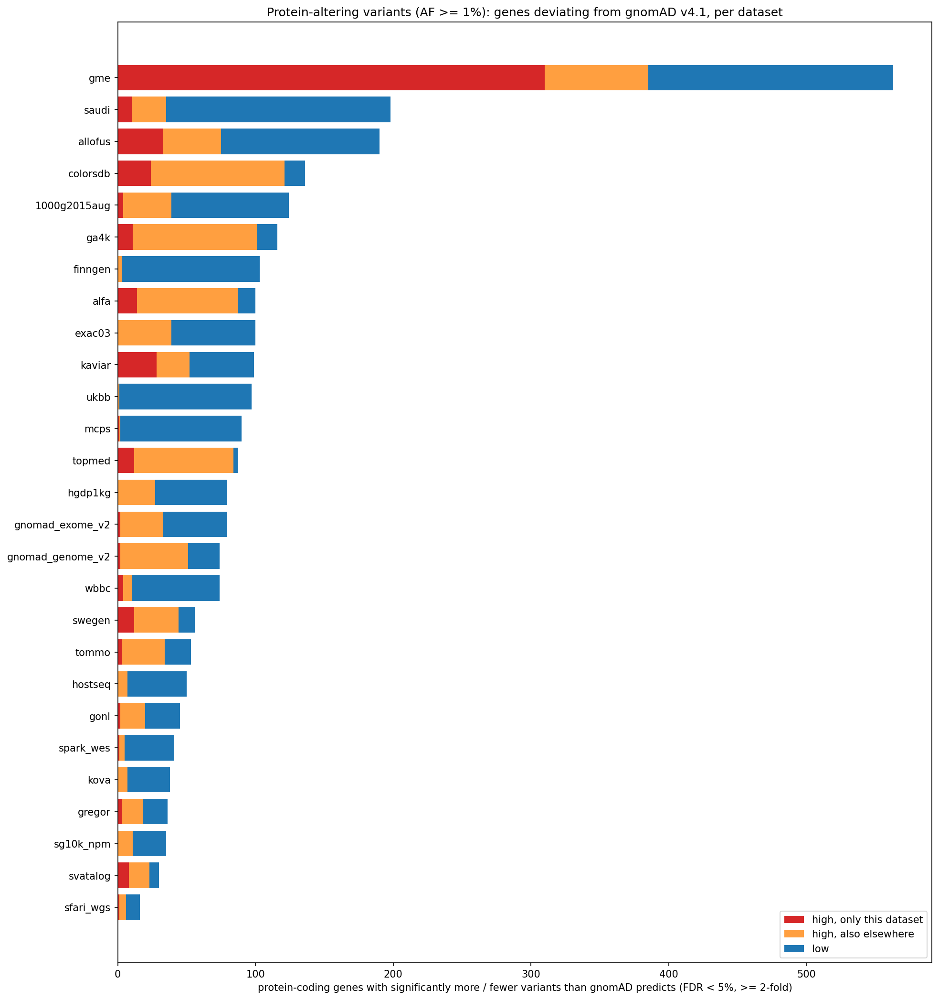
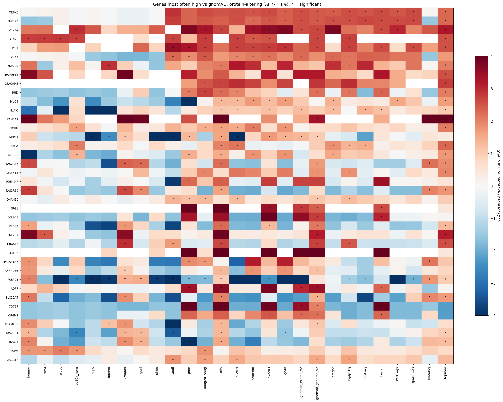
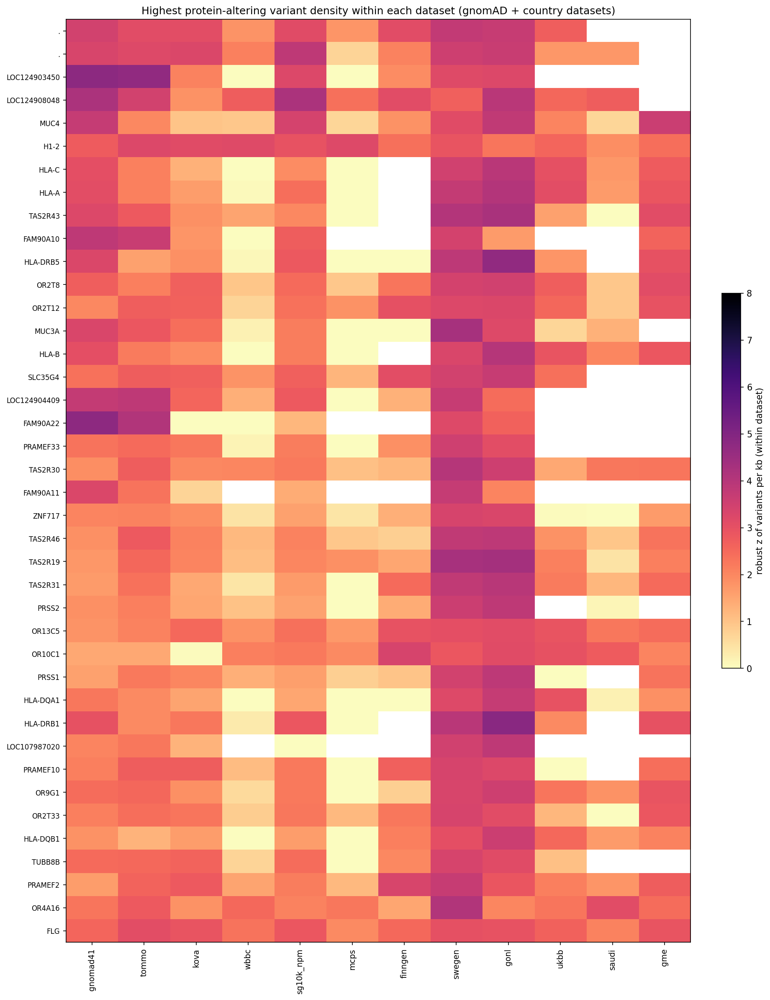
Problems found in public frequency resources and in intermediate processing during this study. Each would have changed the conclusions if left uncorrected.
| Source | Problem | Evidence | Handling |
|---|---|---|---|
| UCSC ALFA VCF | Indel positions one base too far right | On chr22, REF matches hg38 at POS−1 for 100% of indels and at POS for 5%; 99% of ALFA indels were absent from gnomAD before correction; shifting −1 raised the match to 79% (deletions) and 57% (insertions) | Indels shifted −1 in the union; left out of the frequency analyses (SNVs kept) |
UCSC GenomeAsia (varFreqsAll.bb) |
Unreliable frequencies | REF matches hg38, but ~25% of variants at AF 10–90% are absent from both TOPMed and gnomAD | Excluded from the frequency analyses |
UCSC SPARK, ToMMo (varFreqsAll.bb) |
Records with tiny allele numbers | e.g. AC = 3 with AF = 1; AC = 1 with AF = 0.5 (AN = 2). These made 960 rare pathogenic variants look common (SPARK) and pushed ToMMo’s share of common SNVs absent from gnomAD to 14% (all regions, before the rule; 0.3% exonic and 7.2% non-exonic after it) | AF ignored when AN (or AC/AF) < 100 |
UCSC varFreqsAll.bb |
Column order differs from its own schema | Rows with a single source cohort fill another cohort’s columns (e.g. SPARK values under indAC) |
Header rebuilt from the data, verified on 20 M rows |
UCSC varFreqsAll.bb |
IndiGen listed in the schema but never a source | Its columns are always empty | Not used |
| gnomAD v4.1 (ANNOVAR tables) | Rows with AF = 0 | Variant seen only in QC-failed genotypes; 60–90% of “common locally, rare in gnomAD” calls were these rows | Treated as no AF; genome AF used in exonic regions |
| gnomAD v4.1 exomes (ANNOVAR table) | Missing group AFs | 12–26% of common sites have no AF for a given group (not assessed in part of the exome data) | Group AF taken from gnomAD genomes |
| ANNOVAR hg38 1000 Genomes | Encoded indel alleles | 0C, 1AC, 21 = <ref length><alt>; plain SNVs have no prefix |
Decoded |
| GME (ANNOVAR) | Indels | 21.6% of GME indel polymorphisms absent from gnomAD, 35.7% rare in every group; several implausible pathogenic indels at ~50% (BRCA2, ASPM) | Reported with a caveat |
| Single-dataset clinical frequencies | Implausible AFs for known pathogenic variants | ALFA MYH7 74%, SVatalog CFTR F508del 77%, GME BRCA2 deletion 47%, UK Biobank ABCC6 deletion 99.99% | ClinVar flags require ≥ 2 independent datasets |
| Problem | Effect before the fix | Fix |
|---|---|---|
ANNOVAR .idx bins are not listed in file order |
Chromosome slices read half of gnomAD, All of Us and Kaviar; common SNVs looked 26% “absent from gnomAD” in every dataset | Slice from the smallest start to the largest end offset; verified against full-file counts |
Insertions written with - were shifted one base in an early overlap script |
- and anchored forms of the same insertion counted twice |
Anchor rule fixed before the union was built |
| Allele de-duplication by position only before VEP | ~34 M variants left unannotated | De-duplication on the whole allele; a check reports unannotated variants |
| A file glob picked up the list of SNVs missing from the VEP lookup twice | Those SNVs counted twice per gene | Distinct file names per intermediate list |
Five analyses built on the study’s harmonised outputs. None of them needs the raw frequency files: they read the kept archive (data/archive/: the exonic variant table with every dataset’s AF, gene-level tables, PCA matrices) and public reference data. Nothing under /home/HUVYA is used. Each analysis writes to its own folder (results/<NN_analysis>/{tables,figures}), and its scripts are in scripts/analyses/.
Datasets used as “population datasets” in sections 2–5: all frequency-study datasets except disease cohorts (SPARK, SFARI WGS, GREGoR, GA4K) and earlier gnomAD releases (gnomAD v2, ExAC), which are not independent of gnomAD.
prep_clinvar_plp.sh
Naser_VEP RefSeq cache (--af_gnomade --af_gnomadg); group AF = exome, or genome where the exome has none; popmax = highest group AF.founder_and_carrier.py → results/04_founder_variants/
Question. Which ClinVar P/LP variants are much more frequent in a population than anywhere in gnomAD?
Method. A variant is enriched in a dataset when its AF there is ≥ 0.1% and ≥ 10 times gnomAD popmax (or it is absent from gnomAD). It is high confidence when it is enriched in at least two datasets, has at least one ClinVar review star, does not lie in an unreliable gene or a GIAB difficult region (section 4), and its AF is at most 5% (higher is implausible for a penetrant disease allele).
Results.
| Variants | |
|---|---|
| P/LP variants enriched in at least one dataset | 1,621 |
| Enriched in two or more datasets | 61 |
| High confidence | 32 |
Tables: founder_candidates_all.tsv, founder_candidates_replicated_1star.tsv, founder_candidates_high_confidence.tsv, founder_variant_dataset_pairs.tsv (with the matched gnomAD group AF), founder_summary_per_dataset.tsv.
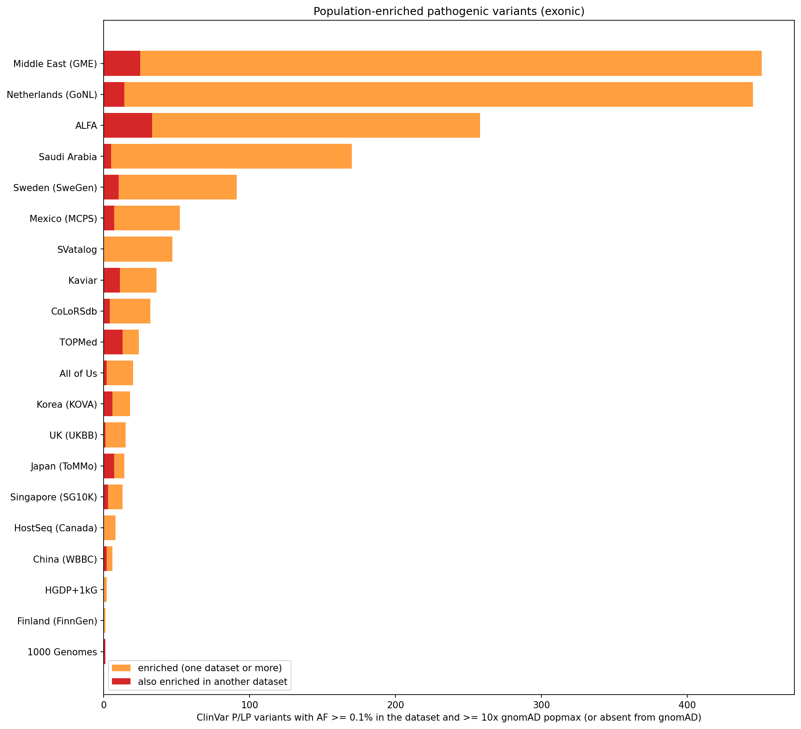
founder_and_carrier.py → results/05_carrier_frequency/
Question. How common are carriers of known pathogenic alleles for recessive disorders in each population?
Method.
Validation against known carrier rates.
| Gene | Population | This study | Known |
|---|---|---|---|
| CFTR | gnomAD NFE (European) | 4.4% | about 1 in 25 (4%) |
| HEXA | gnomAD ASJ (Ashkenazi) | 3.5% | about 1 in 30 (3.3%) |
| HBB | gnomAD AFR | 13.7% | sickle-cell trait 8–25% across African populations |
| GJB2 | gnomAD EAS / SG10K / WBBC | 8.9% / 15.4% / 18.3% | V37I is common in East and Southeast Asia |
| PAH | GME / gnomAD MID | 4.3% / 2.8% | phenylketonuria is frequent in the Middle East |
Results. The estimated share of people carrying a known pathogenic allele in at least one AR gene ranges from 47% (UK Biobank, imputed array data that miss rare variants) to 93% (SG10K) and 92% (GME). This share grows with cohort size and sequencing depth, so it compares technologies as much as populations; per-gene values are the more reliable output.
Tables: carrier_frequency_per_gene.tsv, pathogenic_allele_frequency_per_gene.tsv, expected_affected_per_100k_births.tsv, carrier_summary_per_population.tsv, top15_genes_per_population.tsv.

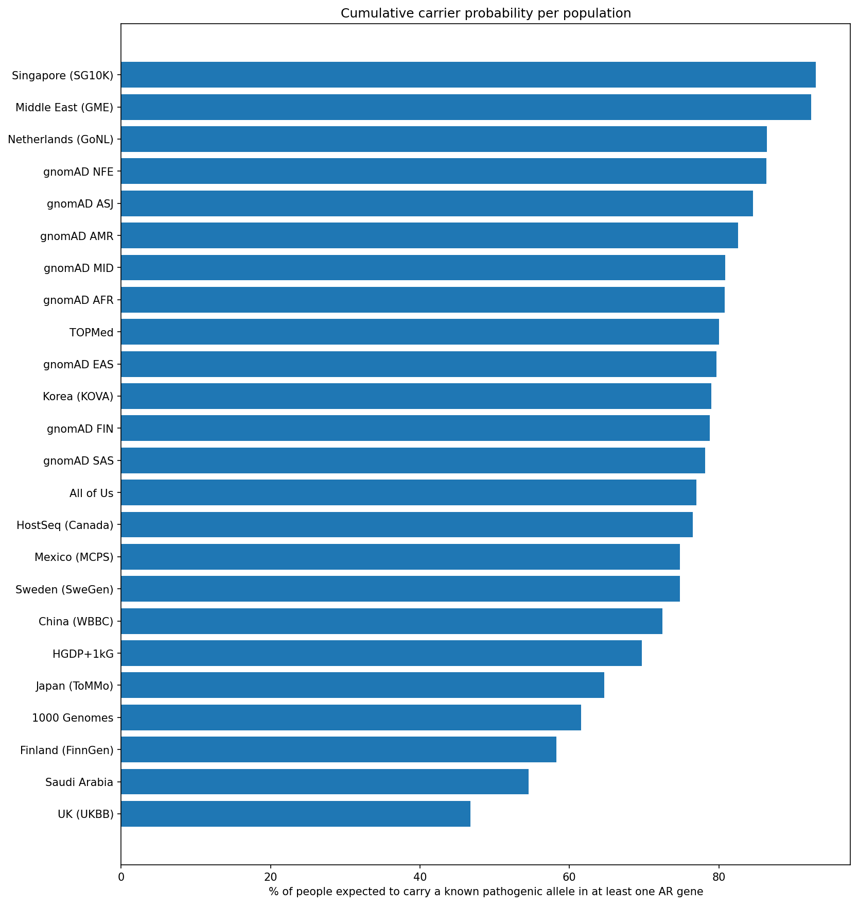
unreliable_regions.sh, unreliable_regions.py → results/06_unreliable_regions/
Method. Gene rules (exonic, protein-coding):
Validation: share of each gene’s exonic footprint inside GIAB v3.5 GRCh38 segmental duplications (166.9 Mb) and low-mappability regions (248.9 Mb), flagged genes against all other protein-coding genes (one-sided Mann–Whitney U). Variant list: ClinVar P/LP, VUS and conflicting variants whose ≥ 5% frequency comes from one dataset only.
Results.
| GIAB region | Flagged genes: median share inside | Flagged genes > 50% inside | Other genes: median | Other genes > 50% inside | p |
|---|---|---|---|---|---|
| Segmental duplications | 48% | 49% | 0% | 7% | 3.4 × 10⁻²⁴ |
| Low mappability | 7% (mean 28%) | 28% | 0% (mean 6%) | 4% | 1.1 × 10⁻¹⁹ |
Outputs: unreliable_genes.tsv, unreliable_genes.hg38.bed (for annotation pipelines), giab_enrichment.tsv, unreliable_variants_clinvar_single_dataset.tsv, unreliable_variants_by_dataset.tsv.

ancestry_markers.py → results/07_ancestry_markers/
Method. SNVs from the study’s PCA matrices (exonic and non-exonic) with gnomAD genome AFs. Middle East = mean of Saudi, gnomAD MID and (in exons) GME, requiring at least two of these sources to agree within 0.1; autosomes only. Two scores: Rosenberg’s informativeness for assignment (In) across Middle East, AFR, AMR, EAS, NFE and SAS; and ME_gap = the smallest |AF(Middle East) − AF(other group)|, large only when the Middle East differs from every group. Each list thinned to one SNV per 500 kb; top 1,000 kept.
Results. 571,795 exonic and 9,904,927 non-exonic SNVs scored. The Middle East-distinct panel has a median gap of 0.18; its closest other group is most often NFE (411 SNVs), then AMR (234), AFR (165), SAS (144) and EAS (46), consistent with the Middle East’s position between Europe and South Asia. The panel is a selection only: it has not been tested on individual genotypes.
Tables: panel_middle_east_distinct_top1000.tsv, panel_continental_top1000_informativeness.tsv, panel_summary.tsv.
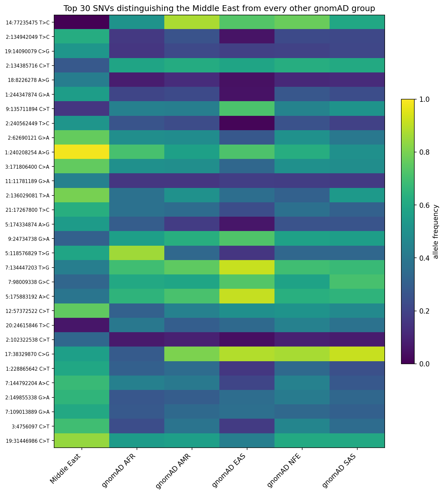
acmg_impact.sh, bias_with_population_af.py, acmg_compare.py → results/08_acmg_impact/
Question. How many ACMG classifications change when population datasets are added to gnomAD?
Stage acmg (optional; bash scripts/run_all.sh acmg). Samples are set in ACMG_SAMPLES in scripts/config.sh.
Method.
NASER_FILES/Naser_VEP/results), HUV00002 and HUV00003 (copied read-only from the HUVYA WGS output to extra_analyses/acmg_impact/inputs/). Each is split into one ALT per record, left-aligned (bcftools norm -m -any -f hg38), and limited to PASS variants inside the gnomAD v4 exome calling intervals: 233,481, 239,153 and 237,108 variants (709,742 in total).Naser_VEP RefSeq cache, --everything, REVEL, AlphaMissense, ClinVar from the BIAS data release).bias_with_population_af.py) wraps BIAS’s variant builder and raises the gnomAD allAf and popmax it uses for BA1, BS1, PM2 and expert-panel rules to the population-dataset AF when higher.Results (summary.tsv; per-sample transition tables class_transitions_A_to_B*_<sample>.tsv).
| Genome | Variants | VUS in A | VUS → LB/B, B1 | VUS → LB/B, B2 | P/LP in A | P/LP downgraded, B1 / B2 | Towards pathogenic |
|---|---|---|---|---|---|---|---|
| HUV00001 | 233,481 | 5,191 | 1,919 (37.0%) | 1,089 (21.0%) | 11 | 2 / 1 | 0 |
| HUV00002 | 239,153 | 5,863 | 2,315 (39.5%) | 1,418 (24.2%) | 8 | 3 / 1 | 0 |
| HUV00003 | 237,108 | 6,462 | 2,720 (42.1%) | 1,631 (25.2%) | 9 | 5 / 3 | 0 |
| All three | 709,742 | 17,516 | 6,954 (39.7%) | 4,138 (23.6%) | 28 | 10 / 5 | 0 |
Across the three genomes, B1 / B2 gained BA1 for 9,237 / 5,542 variants and BS1 for 2,044 / 1,417, and removed PM2 from 3,105 / 1,865.
The five P/LP downgrades under B2 are explainable:
B1-only downgrades rest on a single dataset (for example GSK3A, Saudi 0.5%) and are prevented by the two-dataset rule.
Interpretation. Adding population frequencies mainly resolves VUS: about a quarter (two datasets must agree) to two fifths (any dataset) of each genome’s VUS become benign or likely benign, consistently across the three genomes, and no variant moves towards pathogenic. B2 is the safer rule for clinical use; P/LP downgrades still need review, especially in duplicated genes.

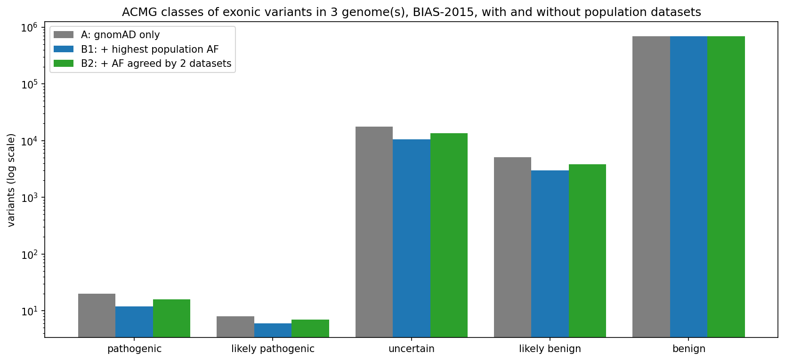
Koch C, Khalid S, Khan MZ, et al. Analysis of 173,303 exomes and genomes in the Pakistan Genome Resource. Nature 656, 670–679 (2026). https://doi.org/10.1038/s41586-026-10667-5
Share of coding variants absent from gnomAD v4.1, by consequence (PGR: paper Table 1, all of gnomAD, MAC ≥ 1; this study: exonic variants of protein-coding genes per dataset; results/09_pgr_comparison/).
| Dataset | Synonymous | Missense | In-frame | pLoF | pLoF / synonymous |
|---|---|---|---|---|---|
| PGR (Pakistan) | 24.9% | 30.3% | 35.5% | 48.7% | 1.96 |
| ToMMo (Japan) | 26.2% | 34.0% | 45.8% | 55.3% | 2.11 |
| All of Us | 20.6% | 25.1% | 32.1% | 39.7% | 1.93 |
| MCPS (Mexico) | 19.6% | 25.2% | 29.9% | 44.0% | 2.24 |
| WBBC (China) | 18.5% | 21.3% | 22.6% | 37.2% | 2.01 |
| KOVA (Korea) | 14.6% | 18.9% | 25.7% | 36.8% | 2.52 |
| SG10K (Singapore) | 12.9% | 16.8% | 19.2% | 31.1% | 2.41 |
| TOPMed | 12.8% | 15.7% | 19.0% | 25.5% | 1.99 |
| GME (Middle East) | 10.8% | 17.5% | 9.4% | 33.9% | 3.13 |
| Saudi | 3.6% | 8.0% | — | 15.4% | 4.30 |
| SweGen (Sweden) | 2.0% | 3.5% | 4.6% | 9.4% | 4.64 |
| GoNL (Netherlands) | 3.2% | 6.0% | 4.5% | 15.0% | 4.74 |
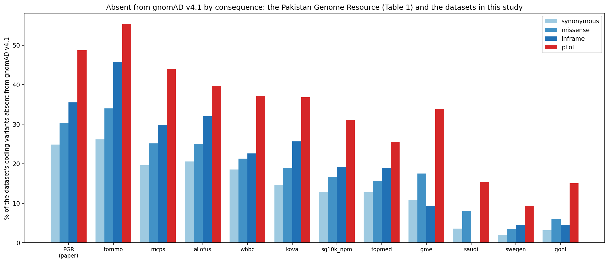
The paper places Pakistani populations closer to European and Middle Eastern groups than to East Asian or African groups. Our mean absolute AF differences (exonic SNVs) agree for gnomAD’s South Asian group:
| From gnomAD SAS to | Mean |ΔAF| |
|---|---|
| gnomAD AMR | 0.060 |
| gnomAD MID, gnomAD NFE | 0.067 |
| Saudi | 0.069 |
| East Asian cohorts (ToMMo, KOVA, WBBC, gnomAD EAS) | 0.101–0.105 |
| gnomAD AFR | 0.122 |
Our Middle East marker panel points the same way: its closest other group is most often NFE, then AMR, AFR and SAS, with EAS least often.
The paper’s homozygous loss-of-function discovery rests on high autozygosity. In our data, the consanguineous Middle Eastern datasets carry the strongest population-specific clinical signal: GME is the only dataset adding substantial common coding variation beyond gnomAD (7.5% of common exonic SNVs), it takes part in 17 of the 32 high-confidence founder pathogenic variants, and it has among the highest carrier burdens (for example PAH 4.3%).
The paper presents PGR as a reference for clinical variant interpretation in South Asia. Our ACMG test shows why such resources matter: adding population frequencies to gnomAD moves 21–37% of one genome’s VUS to (likely) benign.
The Pakistan Genome Resource and this multi-population study agree on the pattern (more damaging variants are less often in gnomAD), on its size for large under-represented cohorts, on population structure, and on the value of national resources for consanguineous, under-represented populations. They are complementary: PGR adds individual-level homozygosity, and this study adds the common-variant view across 27 datasets and the clinical frequency checks.
The study can be presented as a conference abstract now and developed into a journal paper with additions.
Strengths
Needed for a journal paper
Possible venues
| Venue type | Examples | Status |
|---|---|---|
| Conference | ASHG or ESHG annual meeting (abstract) | Ready with current results |
| Human genetics journal | European Journal of Human Genetics, Human Genetics, Human Genomics, Genetics in Medicine Open | After the additions above |
| Resource or methods journal | NAR Genomics and Bioinformatics, BMC Genomics, Database | If the harmonised union and quality flags are released |
No input data are redistributed in this repository. Before releasing any derived per-variant file (for example the union table), check the terms of each source: gnomAD (open), UK Biobank, All of Us (data and statistics dissemination policy), FinnGen, ToMMo, TOPMed/BRAVO, SPARK/SFARI, and ANNOVAR’s database licence (free for non-commercial use).
Analyses that would add value for clinical and population geneticists, roughly in order of value for effort. Each can reuse the union, the harmonised per-dataset frequencies and the VEP annotation built here.
Done (see Additional analyses): founder and population-enriched pathogenic variants (item 5), carrier frequencies (item 4), the “do not trust the frequency” gene and region list (item 7), candidate ancestry-informative markers (item 10, selection only), and an ACMG reclassification test on three genomes (item 2). Need the raw frequency files (AC, AN or homozygote counts were not kept): items 3 and 8, and the non-coding parts of items 6 and 9.
What the study read, what it produced, and what is kept after the raw inputs are deleted.
Sizes and dates as on the analysis server, 24 November 2026.
/home/NASER/annotation/population_study/data/raw/annovar_popfreq/, 233 GB)| File | Size | Date | Re-download |
|---|---|---|---|
hg38_gnomad41_genome.txt (+ .idx) |
102.5 GB | 2024-06-02 | annotate_variation.pl -buildver hg38 -downdb -webfrom annovar gnomad41_genome humandb/ |
hg38_allofus.txt (+ .idx) |
85.5 GB | 2025-03-14 | … -downdb -webfrom annovar allofus |
hg38_gnomad41_exome.txt (+ .idx) |
18.6 GB | 2024-05-31 | … gnomad41_exome |
hg38_gnomad_genome.txt (+ .idx) |
17.1 GB | 2019-12-06 | … gnomad_genome |
hg38_kaviar_20150923.txt (+ .idx) |
12.2 GB | 2019-12-06 | … kaviar_20150923 |
hg38_ALL.sites.2015_08.txt and AFR, AMR, EAS, EUR, SAS |
9.0 GB | 2015-08-26 | … 1000g2015aug |
hg38_gnomad_exome.txt (+ .idx) |
1.1 GB | 2019-12-06 | … gnomad_exome |
hg38_exac03.txt (+ .idx) |
0.6 GB | 2019-12-06 | … exac03 |
hg38_gme.txt (+ .idx) |
0.07 GB | 2019-12-06 | … gme |
/home/NASER/annotation/population_study/data/raw/ucsc_varfreqs/, 122 GB)Base URL: http://hgdownload.soe.ucsc.edu/gbdb/hg38/varFreqs/ (each VCF with its .tbi). Script: scripts/get_ucsc_missing.sh.
| File | Size | Notes |
|---|---|---|
varFreqsAll/varFreqsAll.bb |
30.3 GB | Last modified at UCSC 2026-01-20; 1,259,969,871 records |
varFreqsAll/varFreqsAll.tsv.gz (+ .tbi) |
25.2 GB | Derived: bb_to_table.sh + fix_bb_header.sh |
gregor/gregor.vcf.gz |
20.6 GB | |
npm/SG10K_Health_r5.3.2.sites.vcf.bgz |
17.6 GB | |
hgdp1kFreq/hgdp1k.freq.vcf.gz |
15.9 GB | |
hostseq/hostseq.vcf.gz |
9.5 GB | |
alfa/ALFA.vcf.gz |
2.8 GB | |
wbbc/wbbc.vcf.gz |
2.2 GB | |
sgdpFreq/sgdp.freq.vcf.gz |
2.0 GB | In the union only |
gonl/gonl.vcf.gz |
1.7 GB | |
colorsDb/colorsDbSnv.vcf.gz |
0.7 GB | |
ukbb/ukbb.vcf.gz |
0.55 GB | |
schema/SCHEMA_variant_results_withAF.vcf.gz |
0.54 GB | In the union only |
ga4k/ga4kSnv.vcf.gz |
0.54 GB | |
svatalog/svatalog.vcf.gz |
0.18 GB |
| Location | Size | Content |
|---|---|---|
/home/NASER/annotation/population_study/data/work/freq_union/hg38_freq_union.txt (+ .idx) |
102 GB | Uncompressed union; a compressed copy is kept (below) |
/home/NASER/annotation/population_study/data/work/gene_burden/{split,vep,annot,work} |
~104 GB | Gene-step intermediates; the annotated variant list is kept compressed (below) |
Before deleting annovar_popfreq/: /root/naser/annotation/annovar/humandb/ holds symbolic links to these tables. ANNOVAR runs that use gnomad41_exome, gnomad41_genome, allofus, kaviar_20150923, exac03, gme, gnomad_exome, gnomad_genome or 1000g2015aug from that folder will stop working.
results/ (tables and figures for both regions and the gene level), results/02_frequency_vs_gnomad/supplementary/ (per-variant exonic markers and ClinVar matches), docs/, report/, scripts/.
/home/NASER/annotation/population_study/data/archive/| Path | Content |
|---|---|
union/hg38_freq_union.txt.gz (+ .tbi) |
The union: 2,055,347,367 variants with is_in and how_many (bgzip, tabix-indexed) |
union/summary_*.tsv, run.log |
Variants per dataset, per number of datasets, per dataset combination |
study/{exonic,non_exonic}/ |
counts.tsv, per-variant markers.tsv.gz, clinvar_candidates.tsv.gz, clinvar_hits.tsv.gz, pca_snvs.tsv.gz, all tables and figures |
study/regions/ |
gnomAD v4 exome calling intervals used for the split |
study/extraction_stats.tsv, run.log |
Rows kept and dropped per source |
gene_level/exonic_variants_annotated.tsv.gz |
Every exonic variant: gnomAD AF, AF in each dataset, VEP consequence, gene, MANE |
gene_level/gene_counts.tsv.gz, gene_length.tsv |
Per gene × dataset counts and gene footprints |
gene_level/tables/ |
Including the two full per-gene tables not stored in this repository |
clinvar_20261115.vcf.gz (+ .tbi, .md5) |
ClinVar release used |
/home/NASER/annotation/population_study/data/work/extra_analyses/One folder per analysis (founder_variants, carrier_frequency, unreliable_regions, ancestry_markers, acmg_impact, pgr_comparison), each with tables/ and figures/; shared/ holds the ClinVar P/LP table with population and gnomAD group AFs; acmg_impact/<sample>/ holds each genome’s VEP JSON and three BIAS outputs, and acmg_impact/inputs/ the copies of the HUV00002 and HUV00003 genome VCFs (copied read-only from the HUVYA WGS output). Keep extra_analyses/acmg_impact/inputs/ if you want to rerun the ACMG stage.
With these files every table and figure can be regenerated without the raw inputs (freq_study_report.py, gene_burden_report.py, make_results_md.py). Re-running harmonisation, extraction or the union needs the raw inputs again.
How to regenerate every result in this repository, either from the kept archive (no raw files needed) or from scratch (re-downloading the raw frequency files). Everything runs through one driver:
bash scripts/run_all.sh <stage> [<stage> ...]Paths and settings are in scripts/config.sh; each stage logs to $DATA/logs/<stage>.log.
| Route | Needs | Stages | Time (192-core server) | Regenerates |
|---|---|---|---|---|
| From the kept archive | $KEEP (≈ 21 GB), the reference resources in section 3 |
all-kept = extra reports (+ acmg) |
≈ 3 h (+ 20 min) | All tables, figures and documents; all additional analyses |
| From scratch | Internet access, ≈ 600 GB free disk, section 3 | all-raw = download prepare union study clinvar gene keep extra reports |
≈ 12 h (downloads excluded) | Everything, including the union, the harmonised per-dataset frequencies and the kept archive |
The kept archive (/home/NASER/annotation/population_study/data/archive/) is what remains after the raw frequency files are deleted. Its content and checksums are listed in Data manifest and results/00_provenance/kept_archive.md5.
| Software | Version used | Where |
|---|---|---|
| bash, GNU awk, GNU coreutils (sort) | bash 5, gawk 5.1.1, coreutils 9.0 | system |
| bcftools, tabix, bgzip (htslib) | 1.19 | system (/usr/local/bin) |
| bedtools | 2.x | system |
| UCSC bigBedToBed, bigBedInfo; aria2 | 482; 1.37.0 | conda env ucsc (bioconda, conda-forge) |
| Python with pandas, NumPy, SciPy, matplotlib | 3.10.22; 2.2.2, 1.26.4, 1.14.1, 3.10.9 | conda env ahm-env ($PY) |
| Ensembl VEP | 116.3 (API 116), Docker image huvya/vep:116, sha256:b8901bb319b3… |
Docker |
ANNOVAR annotate_variation.pl |
2025-03-02 | $ANNOVAR (needed only for download) |
| BIAS-2015 | git commit 290b99a, plus scripts/analyses/bias_pm4_length_chrM.patch |
$BIAS (read-only) |
To rebuild the conda environments elsewhere:
conda create -n ucsc -c conda-forge -c bioconda ucsc-bigbedtobed=482 ucsc-bigbedinfo=482 aria2
conda create -n popfreq -c conda-forge python=3.10 pandas=2.2 numpy=1.26 scipy=1.14 matplotlib=3.10| Resource | Path (config variable) | Used by |
|---|---|---|
| VEP 116 RefSeq cache with gnomAD v4.1 AFs | /home/NASER_FILES/Naser_VEP/vep_cache (VEP_CACHE) |
gene step (indels), ClinVar P/LP group AFs, ACMG |
| VEP annotation of every possible exonic SNV (CADD v1.7 exon set) | $VEP_ROOT/results/CADD_exons_merged_64cpu/…vep.tsv.gz (CADD_VEP_TSV) |
gene step (SNV lookup) |
| hg38 FASTA | /home/NASER_FILES/annovar/hg38/reference/hg38.fa (FA) |
VEP |
| BIAS-2015 data (hg38, 2026-10-15), REVEL, AlphaMissense, ClinVar 2026-10-11 | /home/NASER/annotation/acmg (ACMG) |
ACMG, ClinGen AR genes |
| BIAS-2015 code | /root/naser/annotation/acmg/BIAS-2015 (BIAS) |
ACMG |
| Patient genome | $VEP_ROOT/results/HUV00001_refseq_32cpu/HUV00001.norm.vcf.gz (VCF) |
ACMG |
| GIAB v3.5 GRCh38 stratifications | downloaded by the extra stage |
unreliable regions |
Nothing under /home/HUVYA is used. The published gene step used the HUVYA merged VEP cache (read-only); the default is now the Naser_VEP RefSeq cache, which can pick a different transcript for a small share of variants.
download stage)| Source | What | Exact identity |
|---|---|---|
| ANNOVAR | gnomad41_exome, gnomad41_genome, gnomad_exome, gnomad_genome, kaviar_20150923, exac03, 1000g2015aug, gme, allofus (hg38) |
file sizes and dates in Data manifest; MD5 in results/00_provenance/raw_inputs.md5 |
| UCSC varFreqs | varFreqsAll.bb (30,276,835,043 bytes, modified 2026-01-20) and 13 cohort VCFs |
http://hgdownload.soe.ucsc.edu/gbdb/hg38/varFreqs/; MD5 in results/00_provenance/raw_inputs.md5 |
| gnomAD | v4 exome calling intervals ukb.pad50.broad.pad50.union.intervals |
GNOMAD_INTERVALS_URL in config.sh |
| ClinVar | clinvar_20261115.vcf.gz (GRCh38) |
NCBI archive URL in config.sh; MD5 checked on download |
Public resources change: UCSC and ANNOVAR replace files in place. After download, the driver compares every file with raw_inputs.md5 and reports whether the inputs are identical to the published run. If they differ, the results can differ too; keep the kept archive as the reference.
| Stage | Script(s) | Output | Time | Check |
|---|---|---|---|---|
download |
ANNOVAR -downdb, get_ucsc_missing.sh, curl |
$ANNOVAR_TABLES, $UCSC_DIR, $CLINVAR, $INTERVALS |
hours (network) | log says “raw inputs identical to the published run” |
prepare |
bb_to_table.sh, fix_bb_header.sh |
varFreqsAll.tsv.gz (+ .tbi) |
≈ 1.5 h | 1,259,969,871 rows = bigBedInfo itemCount |
union |
freq_union.sh |
hg38_freq_union.txt (+ .idx, summaries) |
≈ 5 h | 2,055,347,367 variants |
study |
freq_study.sh |
exonic/, non_exonic/ counts and per-variant files |
≈ 1.7 h | 293,015,270 exonic and 3,917,707,046 non-exonic dataset alleles classified |
clinvar |
freq_clinvar.sh, freq_study_report.py |
ClinVar matches, tables, figures | ≈ 20 min | — |
gene |
freq_study.sh (DUMP=1), snv_annot.sh, gene_burden.sh, gene_burden_report.py |
per-gene counts, gene tables and figures | ≈ 3.5 h | 106,845,209 SNVs by lookup + 89,022,055 by VEP = 195,874,106; no “without VEP annotation” warning |
keep |
make_keep.sh |
$KEEP + provenance/*.md5 |
≈ 1 h | KEEP_DONE in the log |
extra |
extra/* (except ACMG) |
$EXTRA_DIR/<analysis>/{tables,figures} |
≈ 70 min | numbers in section 6 |
acmg (optional) |
extra/acmg_impact.sh, extra/acmg_compare.py |
$EXTRA_DIR/acmg_impact |
≈ 20 min for 3 genomes | numbers in section 6 |
reports |
freq_study_report.py, gene_burden_report.py on $KEEP; copy; make_results_md.py; build_report_md.sh |
results/, reports/sections/02_results.md, reports/population_frequency_report.md |
≈ 1 h 50 min (the gene-level binomial tests take most of it) | git diff --stat results/ shows no numeric change |
| Quantity | Value |
|---|---|
| Union variants | 2,055,347,367 |
| ToMMo common exonic SNVs absent from gnomAD (AF ≥ 1%) | 0.31% |
| GME common exonic SNVs absent from gnomAD | 7.46% (7,363) |
| TOPMed common non-exonic SNVs absent from gnomAD | 7.65% |
| Exonic ClinVar P/LP flags: total / supported by ≥ 2 datasets | 140 / 12 |
| Founder P/LP variants: enriched / replicated / high confidence | 1,621 / 61 / 32 |
| Carrier frequency CFTR in gnomAD NFE | 4.4% |
| Unreliable genes / with ≥ 2 rules | 57 / 11 |
| ACMG (three genomes): VUS resolved, B1 / B2 | 6,954 / 4,138 of 17,516 (39.7% / 23.6%) |
| PGR comparison: pLoF / synonymous ratio, All of Us | 1.93 |
| Pitfall | Where handled |
|---|---|
ANNOVAR .idx bins are not in file order: slice from the smallest to the largest byte offset |
freq_study.sh (chunk) |
hg38 1000 Genomes indel alleles are encoded <ref length><alt> |
freq_union.sh, freq_study.sh |
| UCSC ALFA indel positions are one base too far right | union: shift −1; study: ALFA SNVs only |
varFreqsAll.bb column order differs from its schema |
fix_bb_header.sh |
| GenomeAsia frequencies unreliable | excluded in freq_study.sh |
| Tiny allele numbers (AC = 3, AF = 1) in SPARK, ToMMo | MINAN=100 |
| gnomAD AF = 0 means QC-failed carriers only | treated as no AF |
| gnomAD exome group AFs missing at 12–26% of common sites | genome fallback per group |
VEP RefSeq cache is BAM-edited: needs --fasta |
config.sh FA |
VEP gnomAD field names are gnomADe_<GROUP>_AF |
prep_clinvar_plp.sh |
| De-duplicate VEP input on the whole allele, not on position | gene_burden.sh |
| Single-dataset frequencies are mostly errors | replication rules in ClinVar, founder and carrier analyses |
| CFTR poly-T/TG intronic alleles inflate carrier rates | coding P/LP only in carrier analysis |
bash scripts/run_all.sh all-kept was run from the kept archive on a clean copy of the repository. Every result table under results/ (study, gene level and additional analyses) was regenerated byte-for-byte identical; only PDF files differ, through their embedded creation timestamps. The ACMG stage was then run separately on three genomes.
$KEEP/provenance/raw_inputs.md5 and kept_archive.md5 exist and are non-empty (they are copied to results/).bash scripts/run_all.sh all-kept once and confirm that git diff --stat results/ shows no numeric change./root/naser/annotation/annovar/humandb/ holds symbolic links into $ANNOVAR_TABLES.